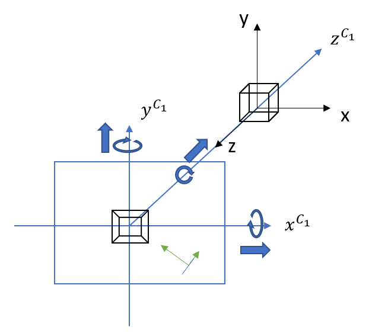

The first, perhaps most natural navigation system is rotating with respect to the camera coordinate system. This creates a feeling of being in the 4D space and moving around in it from a first person perspective.
Navigating 4D space
Project by Theresa Follath (follath@campus.tu-berlin.de)
Seeing a rotation of an object in four dimensional space can be unintuitive and seemingly impossible. This project introduces different navigation models to move a system of two cameras in a 4D space with the goal of helping the user to get an intuition for this space and the shape of the objects inside it.
Introduction
Imagining what four dimensional objects could look like is difficult for people who are bound to living in three dimensions. Even though we can visualize this space by using projections it remains difficult to understand how these projections relate to the actual shape of the four dimensional object. It is necessary to be able to move around in the space similarly to how we can move in three dimensional space to look at objects from different perspectives in order to understand their shapes. Therefore, this project introduces several navigation systems to move a camera in 4D space.
In order to visualize 4 dimensional objects we need to project them to a 2 dimensional plane that we can show on the screen. To do that we use two cameras: One that projects from 4D to 3D and one that lives in the space of this projection and projects from 3D to 2D. Both cameras can be moved around in their respective space with several different control systems. The goal of this project is to implement some of these systems such that they could later be evaluated in terms of their intuitivity.
Mathematical Concepts
This section briefly introduces mathematical background such as coordinate system transformations and projections and how these concepts can be lifted into the 4D space.
Visualization
Coordinate systems
World coordinate system (black) with camera coordinate system (blue) defined by position \(P^{C_1}\) and three vectors that form the orientation of the camera.
A simple pinhole camera \(C_1\) that performs perspective projection from 3D to 2D space can be defined by its position and orientation in the 3-dimensional space it lives in. The position is a vector \(P^{C_1} \in \mathbb{R}^3\) whereas the orientation consists of three orthogonal vectors that form a basis of the camera coordinate system and can be written in a matrix \(A^{C_1} \in \mathbb{R}^{3\times 3}\). \[ \begin{align} P^{C_1} &= \begin{bmatrix} p^{C_1}_x \\ p^{C_1}_y \\ p^{C_1}_z \end{bmatrix} \\ A^{C_1} &= \begin{bmatrix} \vec{x}^{C_1} & \vec{y}^{C_1} & \vec{z}^{C_1} \end{bmatrix} \end{align}\] The transformation of a given point \(Q \in \mathbb{R}^3\) from world coordinates to camera coordinates is thus calculated with \(Q' = A^{C_1} \cdot Q + P^{C_1}\) where \(Q'\) is in camera coordinates. In this coordinate system the position of the camera is in the origin.
For this camera \(C_1\) that projects from 3D to 2D we define the z-axis as the optical axis along which the camera will project. Now we can perform the projection of point \(Q'\) onto any two dimensional image plane that is parallel to the xy-plane. We choose the plane at \(z=1\) and calculate the image \(Q'' \in \mathbb{R}^2\) of \(Q'\) with \[Q'' = \begin{bmatrix} Q'_x / Q'_z \\ Q'_y / Q'_z \end{bmatrix} \]
Now that we know how a 3D->2D camera works we can easily lift this concept one dimension higher. A camera \(C_2\) that projects from 4D to 3D is thus defined by position \(P^{C_2} \in \mathbb{R}^4\) and orientation \(A \in \mathbb{R}^{4\times 4}\) with four orthogonal vectors \(A = \begin{bmatrix} \vec{x}^{C_2}, \vec{y}^{C_2}, \vec{z}^{C_2}, \vec{w}^{C_2} \end{bmatrix}\). Again we can transform each point \(Q\) from world coordinates to camera coordinates by calculating \(Q' = A^{C_2} \cdot Q + P^{C_2} \). For the higher dimensional camera we choose the w-axis as the optical axis along which we project. The space in which we project is now not a plane but a three dimensional volume. The projection of \(Q\) onto this viewing volume at \(w = 1\) is calculated with \[Q'' = \begin{bmatrix} Q'_x / Q'_w \\ Q'_y / Q'_w \\ Q'_z / Q'_w \end{bmatrix} \] In order to be able to show something on the screen we need to do another projection. This is achieved by placing a 3D->2D camera \(C_1\) as introduced above into the three dimensional volume that we get from the projection with the camera \(C_2\).
Thus, we have the following pipeline for the visualization process for a point \(Q \in \mathbb{R}^4\):
4D->2D visualization pipeline
- Transform point from 4D world coordinates to 4D camera coordinates: \(Q' = A^{C_2} \cdot Q + P^{C_2}\)
- Project along w-axis into 3D image volume: \(Q'' = \big(\frac{Q'}{Q'_w} \big)_{xyz} \in \mathbb{R}^3\)
- Transform from 3D world coordinates to 3D camera coordinates: \(Q''' = A^{C_1} \cdot Q'' + P^{C_1}\)
- Project along z-axis onto 2D image plane \(Q'''' = \big(\frac{Q'''}{Q'''_z} \big)_{xy} \in \mathbb{R}^2\)
Note that there are four coordinate systems: one 4D world and one 4D camera coordinate system, the 3D coordinate system that results from the projection by the 4D camera which becomes the world coordinate system of the 3D camera and finally the coordinate system of the 3D camera itself. In order to help with the understanding of which points are far from the 4D camera and which are close with respect to the visual axis w, a simple color coding is used. In the visualization vertices that are further away from the 4D camera are green and those that are closer are red. The 3D hyperplane that goes through the 4D world origin and is orthogonal to the camera viewing axis is used as the separation between red and green. As the 4D scene contains only a hypercube centered at the world origin, it suffices to differentiate between the vertices that are behind and in front of the hyperplane.
Navigation
In order to get an understanding of 4 dimensional space we should also be able to move around in it. Each camera can be moved and rotated to create an image of the 4D object taken from a different perspective. There are several degrees of freedom that need to be respected to be able to show each possible perspective on the object. Naively, these are the following:
- 4D camera
- Moving in x, y, z, w direction
- Rotating in the xy, xz, yz, xw, yw, zw planes
- 3D Camera
- Moving in x, y, z direction
- Rotating in the xy, xz, yz planes
Moreover, we can differentiate between rotating in the planes of the camera coordinate system and in those of the world coordinate system. Ideally, we want to be able to look at the 4D object from each possible direction and move the camera such that it looks at the object from a specific direction in a simple or "intuitive" way. However, simplifying the navigation structure can mean a loss of degrees of freedom and therefore not being able to look at the object from each direction. The challenge is therefore to reduce the ways of moving the camera without losing too many perspectives on the scene.
Figure 2: xy-plane rotation in different coordinate system
Depending on the coordinate system in which we rotate, a xy-rotation corresponds exactly to rotating "in the screen". Then rotating in this plane does not give us a new perspective.a) Rotating in the xy-plane of the 4D world coordinates. The projection to 2D changes.
b) Rotating in the xy-plane of the camera coordinate system. The projection to 2D does not change, only its orientation.
Luckily, we can safely get rid of some of these without losing perspective. Some of the rotations are obsolete as they are overlapping in the sense that they can be represented by a combination of others. We can for example describe a rotation in the xy-plane by a combination of three other rotations in the xz- and yz-planes: \[R_{xy}(\alpha) = R_{xz}(-90) \cdot R_{yz}(\alpha) \cdot R_{xz}(90)\] Technically, we could also do that for the xz- and yz-plane by substituting with rotations in planes that contain the w-axis: \[R_{xz}(\alpha) = R_{xw}(-90) \cdot R_{zw}(\alpha) \cdot R_{xw}(90) \\ R_{yz}(\alpha) = R_{yw}(-90) \cdot R_{zw}(\alpha) \cdot R_{yw}(90) \] Expecting the user to figure out how to rotate in the xy-plane by using rotations in the xz- and yz-plane seems justified because people generally have a good intuition for moving in 3D space. Additionally, we preserve one degree of rotational freedom by projecting onto an image plane. If we rotate in the planes of the camera coordinate system, this image plane corresponds to the xy-plane of the coordinate system as can be seen in Figure 2a. On the other hand, that the user is able to use rotations in planes that contain the w-axis is less likely. This is because although all axes of 4D space are generally equal, the w-axis is different from the other axes as we chose it to be the axis of projection in the 4D camera. Thereby, any rotation in a plane that contains this axis will result in a change of the 3D projection that is unfamiliar to the 3 dimensional user. Therefore, we choose to keep the xz- and yz-rotations but remove the xy-rotation in the navigation systems.
Furthermore, we do not need to be able to rotate both cameras in the xz- and yz-planes. It suffices to allow the 4D camera to rotate in these planes and fix the orientation of the 3D camera. When we rotate for example in the planes of the camera coordinate system, a rotation in any plane that does not involve the viewing axis w will not change the three dimensional shape of the projection in the 3D image volume. Instead the projection simply rotates around the projection of the w-axis which is the center of the 3D coordinate system. (This is the same for the xy-plane of the 3D camera that projects along the z-axis (see Figure 2b) where the projection of the object rotates around the center of the image plane.) Placing a fixed 3D camera in the image space and rotating the 4D camera in the xz- and yz-planes therefore results in the 3D camera seemingly orbiting around the center of its world coordinate system.
To further simplify the navigation systems we assume that the object is always centered in the origin of the world coordinate system. This allows us to fix the 3D camera position as well such that it looks towards the center of its world coordinate system. By rotating the 4D camera in its xz- and yz-planes, we simulate a rotation of the 3D camera in the planes of its world coordinate system. We can therefore look at the world coordinate origin from all directions.
Navigation systems
Figure 3: 3D\(\to\)1D

Analogy of the 4D\(\to\)2D system in 3D\(\to\)1D.
In this section the process of developing several navigation systems is described. For better understanding it would be useful to have a visualization of the rotations and translations of the camera. However, since this is difficult for the 4D->2D system, we use an analogy in a lower dimension by using a 3D->1D approach. There are again two cameras: the first one projects from 3D to 2D and rotates in the xy, xz and yz planes. The second camera lives in the 2 dimensional space of the projection where it has a fixed orientation and position (see Figure 3). The xz and yz planes in the 3D setting, i.e. the planes that contain the viewing axis of the higher dimensional camera, correspond to the xw, yw and zw planes in 4D. Moreover, the xy plane of the 3D setting corresponds to the xz and yz planes of in 4D as they contain the viewing axis of the lower dimensional camera. The xy plane in the 4D\(\to\)2D system has no direct equivalent in 3D\(\to\)1D because the lower dimensional camera projects onto the 1 dimensional x-axis and not a 2 dimensional plane. However, it can be seen as a sign change of the x-axis of the lower dimensional camera i.e. a 180 degree rotation.
Navigation system in Camera coordinates
Figure 4: Camera coordinate system
Navigation where every rotation and translation happens with respect to the camera coordinate system.
In the lower dimensional analogy (see Figure 4) we can move the 3D camera along the x-, y- and z-axis of its camera coordinate system. Moreover, it can rotate in its xy-, xz- and yz-plane. The 2D camera remains fixed. A rotation in the xy-plane does not change the projection from 3D to 2D. Instead it results in rotating the projection within the 2D plane and thus allows the 2D camera to look at the projection from different directions. In the 4D version of this, the 4D camera can rotate in xz-, yz, xw-, yw-, and zw-planes. As explained above a rotation in the planes that do not involve the view axis of the higher dimensional camera (w) does not change the projection but allows the fixed 3D camera to seemingly rotate around the 3D projection.
Having some sort of orbit for the lower dimensional camera on which we can rotate around the 3D object without changing the 4D->3D projection can be helpful to the user to grasp the structure of the object as rotating in 3D is familiar. On the other hand, it might not be helpful to the goal of understanding 4D space as the rotations in xz and yz do not change the projection from 4D to 3D at all but only affect the one from 3D to 2D. Another disadvantage of rotating in the camera coordinate system is that in this simple scene where the only object is centered at the origin of the coordinate system, we quickly lose sight of the object when rotating in a plane that contains the w-axis. In order to rotate once around it in one of these planes we need to constantly move and rotate at the same time which becomes tedious after a while. Moreover, it can also happen, that the camera volume (w=1) intersects the object unexpectedly, which might create artifacts in the rendering.
Navigation system in world coordinates
To overcome the shortcomings of the previous system, we change the coordinate system in whose planes the camera rotates to the 4D world coordinate system. Then, we can rotate around the 4D object in each plane without having to move and rotate the camera at the same time. Furthermore, we now rotate around the center of the world coordinate system, which avoids rotating the camera such that we lose the object out of sight.
Figure 5: World coordinate system

Navigation where every rotation happens with respect to the world coordinate system and translation with respect to the camera coordinate system.
Again we consider first the 3D\(\to\)1D analogy (see Figure 5). The higher dimensional camera rotates in the three planes of the world coordinate system. As soon as the xy-planes of both coordinate systems are not parallel anymore, a rotation in xy changes the projection onto the image plane. The xy rotation does therefore not correspond to a rotation within the camera plane anymore. This means that we do not necessarily need to keep it as it does not offer any advantage over the xz and yz rotations anymore and can be expressed as a combination of the latter two (see here). Since the camera now orbits around the center of the world coordinate system whenever we rotate it, we can also get rid of the translation in x and y direction to further simplify the navigation. We can keep the z-movement for zooming.
In the 4D case this means that we could remove the xz- and yz-rotations because similarly to the low dimensional example a rotation in these planes changes the projection from 4D to 3D and might not offer any advantage in terms of intuition over using only the xw, yw and zw planes.
Mixed system
The disadvantage of the first system is that it might happen that the object is rotated out of sight, an advantage is that the rotations happen with respect to the camera coordinate system which means that the movements of the mouse in the user interface map directly to the corresponding direction of the rotation on the screen. The second system has the advantage of rotating around the object centered at the world origin, but on the other hand the rotations around the world coordinate system axes do not always match well with the direction of the mouse movement. Therefore, it could be helpful to combine the best of both systems:
Figure 6: Mixed navigation system
Every rotation happens around the axes of the camera coordinate system but with respect to the center of the world coordinate system.
In this system we rotate around the axes of the camera coordinate system but the center of the rotation is the origin of the world coordinate system (see Figure 6). As we now rotate around this origin, this does not result in losing sight of the object anymore. Rotating in the camera coordinate system gives us again the previously discussed controversial ability to rotate in the xz and yz planes without affecting the 3D projection. However, in this system the depth coloring of the vertices in 4D creates a helpful visual differentiation between the rotations in the planes that change the 3D projection and those that do not.
The rotations in xw and yw and those in xz and yz seemingly keep the positions of the vertices in the 3D projection fixed. The only difference is that in the rotations that contain the w axis, the vertices change color such that those in the front are red and those in the back are green. In the rotations in the xz and yz plane the color of each vertex stays the same but now the red vertices seem to be outside and the green ones inside. Switching between these two kinds of rotations could, with the help of the vertex coloring, improve the understanding of rotations in 4D.
This navigation structure relies on the assumption that the object is centered in the world origin and the camera is pointing towards it. In order to account for more complex scenes or for moving the position of the camera, some modifications would have to be made.
Orbit controls
In order to get a sense of orientation in 4D space it is not helpful that with every rotation we lose the sense of where up and down is. In 3D we can introduce a fixed axis of the camera that points "up". In our example this is the y-axis (see Figure 7).
Figure 7: Orbit controls
The higher dimensional camera orbits on a sphere along the longitude and latitude while its y-axis always points towards the north pole of the sphere.
Then, the direction of the camera \(C_1\) is calculated from two angles \(\phi \in [0, \pi]\) and \(\psi \in [0,2\pi[\) which define longitude and latitude on a sphere centered at the origin of the world coordinate system. The viewing direction is then calculated with \[z^{C_1} = \begin{bmatrix} \sin(\phi) \cos(\psi) \\ \cos(\phi) \\ \sin(\phi) \sin(\psi) \end{bmatrix}\] where \(\phi\) defines the angle to the y-axis (pitch) and \(\psi\) the angle in the xz-plane (yaw). To make sure that we do not lose the up direction we calculate the remaining orthogonal camera coordinate system axes by using the cross product and the global up-direction: \[\begin{align} x^{C_1} &= \text{up} \times z^{C_1} \\ y^{C_1} &= z^{C_1} \times x^{C_1} \end{align}\] This ensures that the y-axis of the camera coordinate system always points along a longitude towards the "north pole" of the sphere, i.e. the point where the global y-axis crosses the sphere.
However, by fixing the up-direction, we create a different problem: When both the up-direction of the higher dimensional camera and the rotation and position of the lower dimensional camera are fixed, we lose the ability to rotate in the xy-plane, i.e. the ability to create different 1D projections of the same 2D projection. We could fix this by allowing for example the lower dimensional camera \(C_2\) to rotate around the center of its world coordinate system (in green in Figure 7). A simple rotation of the camera in 360 degrees would again lose the up-direction in the final 1D projection. As \(C_2\) lives in 2D space there are only two vectors that are orthogonal to the projection axis \(y^{C_2}\) and we cannot use the cross product with the global up-direction to calculate it. To ensure that \(x^{C_2}\) always points to the north pole of the circle, we choose the vector \(x'\) such that \(x' \cdot up \geq 0\) as the axis \(x^{C_2}\). This means the direction of the vector \(x^{C_2}\) is flipped everytime the camera \(C_2\) crosses the y-axis of its 2D world coordinate system during a rotation.
In 4D space we move the camera \(C_1\) on a 3D sphere around the center of the 4D world coordinate system. To calculate the direction we use another angle \(\chi \in [0, \pi]\) such that \(w^{C_1}\) is defined as: \[\begin{align} w^{C_1} = \begin{bmatrix} \sin(\chi) \sin(\phi)\cos(\psi) \\ \sin(\chi) \cos(\phi) \\ \cos(\chi) \\ \sin(\chi) \sin(\phi) \sin(\psi) \end{bmatrix} \end{align} \] where \(\chi\) defines the angle to the z-axis (roll), \(\phi\) the angle to the y-axis (pitch), and \(\psi\) the angle in the xw-plane (yaw). In addition to the global up-direction we also need another fixed global direction in order to calculate the orthogonal vectors of the camera coordinate system. We choose the z-axis as this "right"-direction and calculate the remaining axes according to [1] using their definition of a 4D cross product: \[\begin{align}x^{C_1} &= \text{up} \times \text{right} \times w^{C_1} \\ y^{C_1} &= \text{right} \times w^{C_1} \times x^{C_1} \\ z^{C_1} &= w^{C_1} \times x^{C_1} \times y^{C_1} \end{align}\] For the lower dimensional camera \(C_2\) we use orbit controls in 3D as introduced above with two angles that define the direction.
Conclusion
In this project several navigation structures for moving a camera in 4D space were implemented. The decisions on which navigation systems to implement were mainly made based on theoretical consideration and personal preferences. In order to assess if a system is more intuitive than another it is necessary to conduct user studies. Based on these, future work could explore how to improve the presented systems. The scene that was used in the implementation of this project is rather simple as it is mostly symmetric and the only main object is centered at the world origin. Moreover, the assumptions made when developing these navigation models might prevent them from being applicable to more complex scenes. Nevertheless, it would be interesting to explore how the usability of the systems changes with more complex scenes since there is more need to move the camera.
References
- [1] Four-Space Visualization of 4D Objects http://hollasch.github.io, last retrieved 08.03.2022.